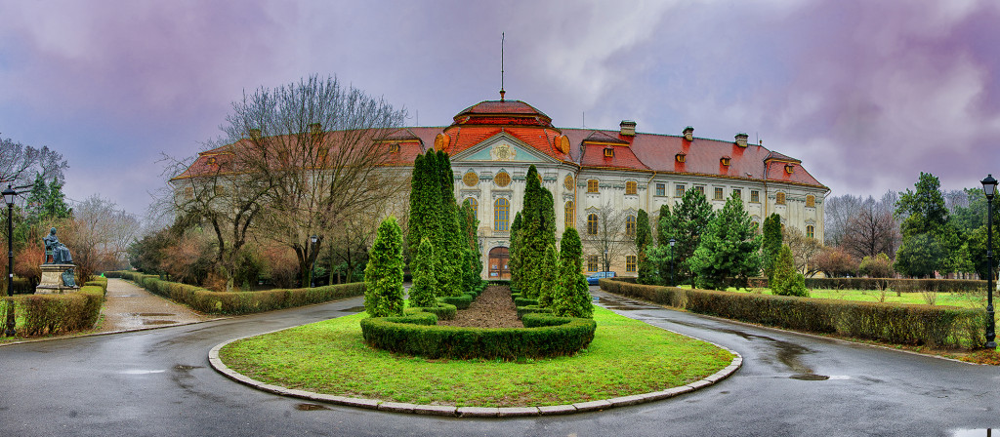

Complexul Baroc
Descriere
Complexul Baroc este cel mai important complex de acest tip din România si unul din cele mai reprezentative ale Europei. Este construit din trei monumente, și anume: Palatul Baroc, Bazilica Romano-Catolică și Șirul Canonicilor.
Un aspect interesant este faptul că Palatul Baroc are o sută de camere și 365 de ferestre câte una pentru fiecare zi a anului. Șirul Canonicilor este un complex arhitectural format din 10 clădiri înșiruite, construite în mai multe etape pe parcursul a 100 de ani.